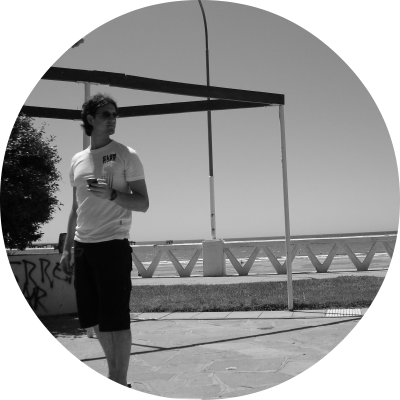

I got my PhD in Physics in 2013 from the National University of Rosario (UNR), Argentina.
Currently I'm a Postdoctoral researcher at the La Plata Astrophysics Institue (IALP), working on open clusters.
- Published articles in ADS.
- Academic profiles: ResearchGate, Google Scholar.
- Researcher identifiers: arXiv, ORCID.